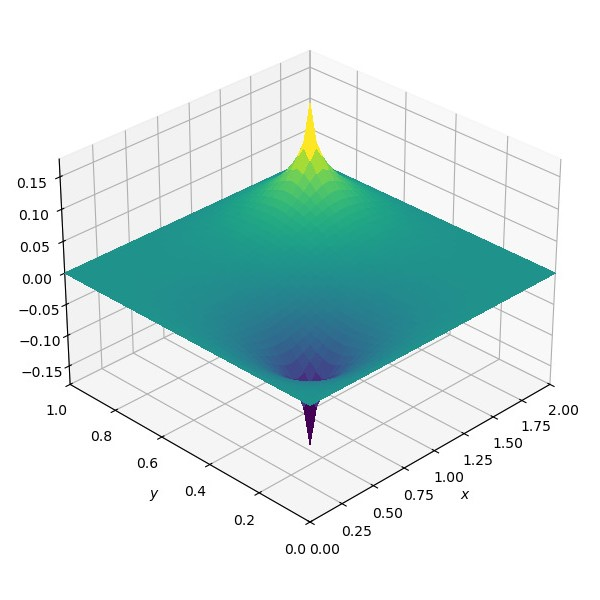
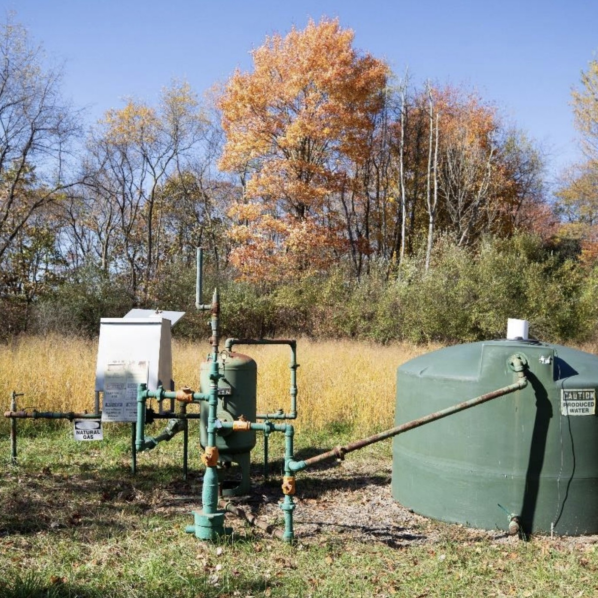
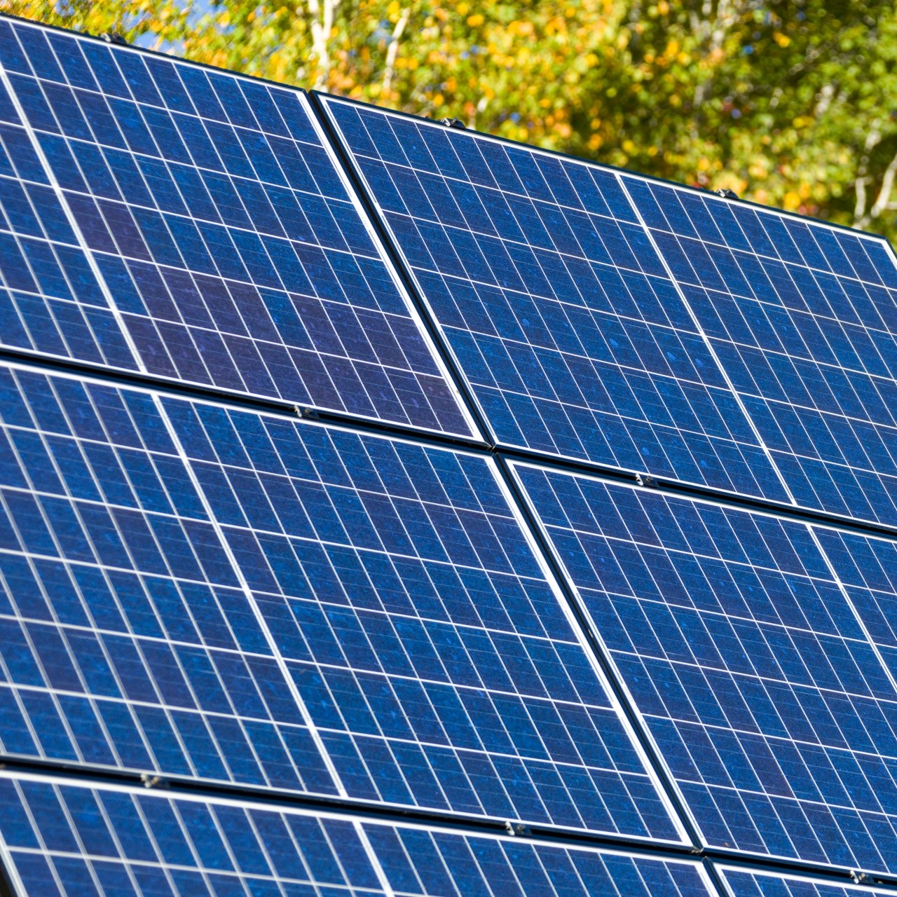
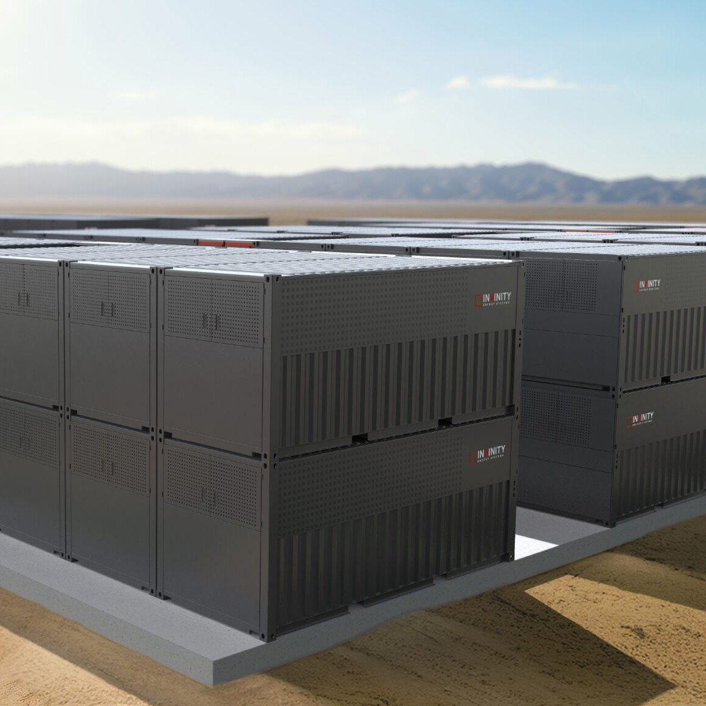
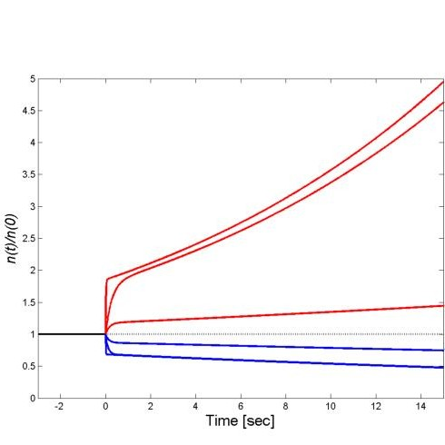
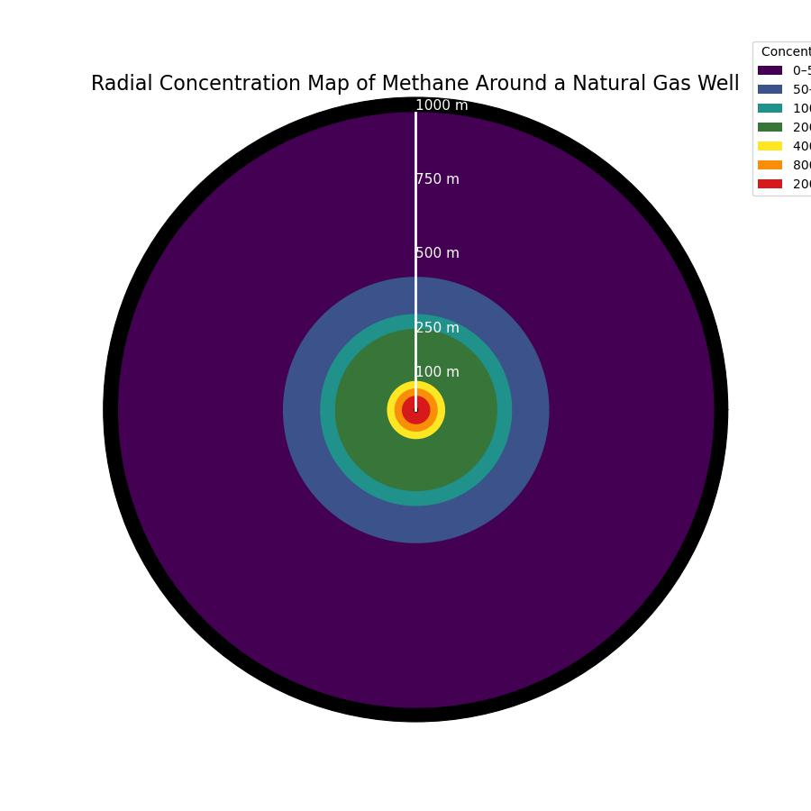
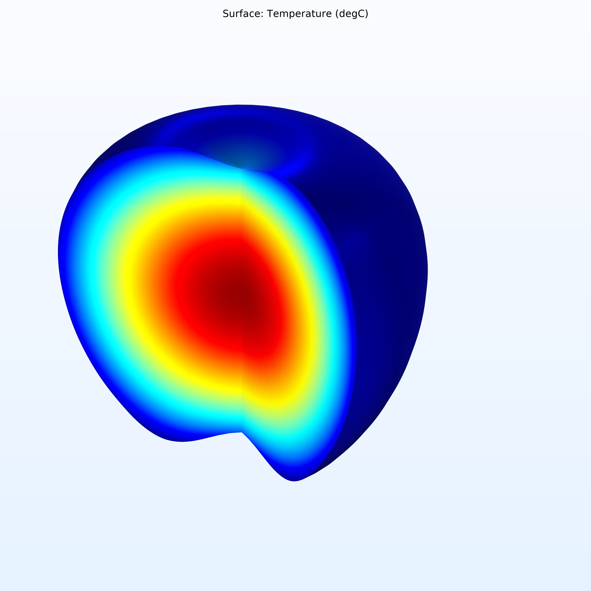
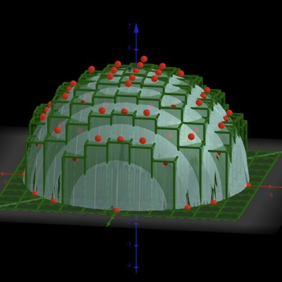
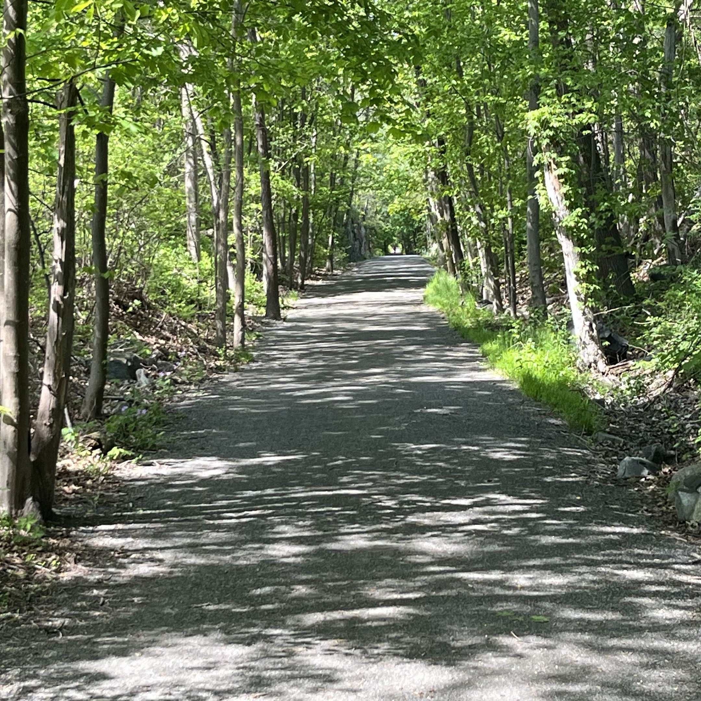

CFD for Environmental Analysis (FUTURE PROJECT)
August - December 2026
My upcoming senior thesis (MQP) involving appplications of computational fluid dynamics (CFD) in an environmental site analysis.
A list of all of my projects, old and new.
Take a look at all of my projects and involvements over the years with some of the projects available. If you would like to use anything posted here, please properly cite and credit me.

August - December 2026
My upcoming senior thesis (MQP) involving appplications of computational fluid dynamics (CFD) in an environmental site analysis.

June - August 2026
Under the Mickey Leland Energy Fellowship (MLEF) with DOE, I investigated low-producing natural gas well economics and environmental impacts over time.
(Image Source: National Energy Technology Lab)
Learn more
May - October 2025
I did data work on the GAP Energy Grant for clean energy and energy efficiency projects as well as the first grant for wastewater energy recovery technology in Massachusetts. This included a gamma log link regression model on projected carbon dioxide emissions per kWh of electricity consumed in Massachusetts.
(Image Credit: Petr Kratochvil)

Investigated the movement of electrons through a slurry electrode, which is an abnornal, non-Newtonian fluid. This delved into Strum Liouville theory.
(Image Source: Invinity Energy Systems)
Since August 2025
I have been leading in-class discussions, running office hours, and helping operate the Math Tutoring Center (MTC) for a variety of math classes. My favorite to teach so far has been ordinary differential equations.
(Image Source: WPI)

I have used Python to numerically solve systems of differential equations that dictate the kinetics of a given process.
(Image Source: SlideServe)
Learn moreApril - May 2025
I have used the pipe modeling software, EPANET, to model and investigate different pipe systems.
(Image Credit: Bùi Hoàng Long)

June 2026
I used AERSCREEN to model the methane concentration surrounding a small natural gas well in order to evaluate safety.
Learn more
As I continue to learn COMSOL, any additional models will be placed here.
(Image Source: COMSOL)
Learn moreJune - July 2026
Using my previous natural gas models, I looked at the economics of owning 70 natural gas wells in Pennsylvania, each peaking at 500 mcf/d. 20 wells were spud initially, and new wells were drilled each year.
(Image Credit: Nur Andi Ravsanjani Gusma)
Learn more
October 2024
This was my first project in college. I learned how to use GeoGebra to make a model to get the height of a solid at a point on a grid. This allowed me to transfer it over to Minecraft, my personal favorite game.

November 2022 - January 2023
In my junior year of high school, I was given the opportunity to represent my school and give feedback on my town's environmental plan. This taught me a lot of lessons about accomodating people's needs, which I carried into my future work.